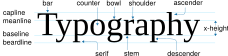
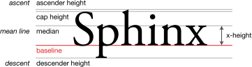

Introduction to
Typography

A guide to the basics of typography on the web.
Each and every letter we read is considered as part of the design of that typeface. Typography is the practice of arranging type to make written language legible, readable, and appealing when displayed. Getting it right is both an art and a science, and like so many other well designed things will gradually become practically invisible the better it is. In this blog post we'll explore the basics of using typography on the web.
A delightful way to appreciate a typeface is through a pangram – a sentence that contains all the letters in the English language. "The quick brown fox jumps over the lazy dog" is probably the most famous, but there are also "Pack my box with five dozen liquor jugs" and "A wizard's job is to vex chumps quickly in fog". "Watch "Jeopardy!", Alex Trebek's fun TV quiz game." is even a pangram!
Type Units
Every length on a page is either absolute or relative. An inch is an inch everywhere, and so are the printer’s own units, the point and the pica, which is 12 of them. Type is sized in points, and the length of a line is measured in picas. Screens added the pixel. CSS counts all of these as absolute, because each is a fixed share of an inch.
Absolute measurements
Millimeters
10 mm = 1 cm
Centimeters
2.54 cm = 1 inch
Inches
1 in = 96 px
Pixels
Plain ol’ pixels.
1 px = 1/96 inch
Points
1 pt = 1/72 inch
Picas
1 pc = 12 pt
Relative measurements
Relative units take their size from something else: the type, the page, or the window. The oldest is the em, which is as long as the type is tall. In 11-point type, it’s 11 points. It’s named after the letter M, though hardly any M is that wide.
em
✨ An em is the element’s own font size. Use it to set the font size itself and it means the parent’s.
rem
A rem is the font size of the whole document, no matter where you use it.
The ex unit is useful when you want to size something in relation to the height of your text's
lowercase letters.

1 ex is the x-height of a font
(x-height is usually about half of the font‑size)
vw
1vw = 1% width of the viewport. This will actually scale when we resize the window. Cool, huh?
vh
1vh = The same as vw, but it takes 1% of the height of the viewport.
%
% is a share of the parent element’s size.
Glossary of type terms
No typography terms found matching "".
-
Alignment: result of lining up letters to a reference such as a margin
-
Aperture: white space at the end of an open counter
-
Apex: the top point where two strokes are joined together
-
Arm: when a horizontal stroke is not attached to a stem on one end
-
Ascender: the stem of a lowercase letter projecting above the x-height.
-
Backslanted: italics leaning backward
-
Ball Terminal: ball-shape extension of a letter
-
Baseline: the imaginary line upon which a line of text rests.
-
Bold: a heavy weight of any given typeface, often used for emphasis.
-
Bowl: the generally round or elliptical forms which are the basic body shape of letters such as C, G, O in the uppercase, and b, c, e, o, p in the lowercase.
-
Bracket: a curved connection between the stem and serif of some fonts. Not all serifs are bracketed serifs.
-
Calligraphy: the art of writing letters with a very specific tool (e.g., broad nib pen, brush pen, etc.)
-
Cap Height: the height of capital letters, measured from baseline to the top of the capital letter. It is based on letters that are flat on the top and bottom, such as an H or an E. Capital letters with curves, such as B, C, D, G, O, Q, and S extend slightly above and below the cap height to appear optically similar in size to other letters.
-
Center aligned: when text is aligned to the center of a text frame, with the rag on the left and right sides of the text frame
LeftCenterRightJustified“Rag” is the white space left at the end of a left-aligned line of text. Too much rag can create a sense of visual misalignment and hinder the readability and visual appeal of your design.
-
Character: a letter, number, punctuation mark or symbol
-
Character Set: entire collection of characters for any given typeface weight
-
Counter: the white space enclosed by a letterform, whether wholly enclosed, as in ‘d’ or ‘o’, or partially, as in ‘c’ or a double-story ‘a’.
-
Crossbar: a stroke across a stem (as in the horizontal line of the letter ‘T’, ‘H’, ‘E’, etc.)
-
Descender: the stem of a lowercase letter that extends below the baseline, such as the g, j, p, q, and y.
-
Display: a category of typefaces that is primarily used for headlines and subheads due to their heavy weight and/or detailed nature
-
Ear: the stroke attached to the bowl of the lowercase g. Some typographers use the same term for the lowercase r.
-
Ellipsis: character composed of three dots.
-
Font Color: used in web design to specify a color
-
Font Size: how big the type is set, in points, pixels, or ems. It’s roughly the distance from the top of the tallest ascender to the bottom of the lowest descender.
-
Font Weight: font thickness (light, regular, medium, bold)
-
Grid: imaginary or actual layout of vertical and horizontal lines for alignment
-
Hand-lettering: creating custom letters from scratch for a specific purpose/client.
-
Hook: curved arch (such as on the letter ‘f’)
-
Italics: forward-slanting characters, developed in early 1500s
-
Joint: stroke connects with a stem
-
Justified: instances when text is aligned to the left and right margin within a text frame, with no rag on either side
-
Kerning: the space between individual pairs of characters.
-
Leading: the vertical space between two lines of text that is measured from baseline to baseline. In some cases, it may be referred to as ‘line height’.
-
Left-aligned: text is aligned with the left margin
-
Leg: short stroke in a downward direction
-
Ligature: occurs where two or more letters are joined together as one character.
-
Link: the stroke connecting the bowl and the loop of the lowercase g.
-
Lowercase: lowercase characters are the non-capital letters of the alphabet. They make up the bulk of written text, with uppercase or capital letters used primarily only to start sentences or proper names. The term lowercase is derived from the days of metal type where the more frequently used letters were kept near at hand in the lower case while the less frequently used capital letters were kept in the harder to reach upper case.
-
Monospaced: an example of a typeface where each character is the same width
-
Orphan: the first line of a paragraph, stranded at the bottom of a page or column.
-
Point size: the distance from the top of the highest ascender to the bottom of the lowest descender is the point size of any given typeface. Originally, this was the height of the face of the metal block on which each individual letter was cast.
-
Rag: the uneven vertical edge of a block of type. Could be on the left side, right side, or both.
-
Readability: degree to which text can easily be read
-
Right-aligned: when text is aligned to the right margin with the rag on the left side of the text frame
-
Sans Serif: no extension of strokes on characters
-
Serif: a stroke drawn at right angle or obliquely across the arm, stem, or tail of a letter. It is found on vertical and horizontal strokes of some characters. Serifs can also fall into different categories, such as slab or hairline, among others.
-
Shoulder: curved stroke connected to a stem
-
Stem: A vertical stroke in a letterform. Can be found in both lowercase and uppercase letters.
-
Stress: diagonal or vertical change in stroke width across a letter
-
Stroke: any linear feature on a letter
-
Swash: addition of a decorative stroke
-
System Font: main font used by a computer operating system
-
Terminal: any stroke which does not terminate in a serif is a terminal. It can be either straight or curved.
-
Tracking: the amount of space between all letters across a line of text. It is also referred to as letter spacing.
-
Type Classification: type of characters based on style
-
Type Properties: qualities that allow characters to fit on a grid
-
Type size: the distance from the top of the highest ascender to the bottom of the lowest descender. It is usually measured in points.
-
Typeface design: the process of creating a complete set of characters in a specific style. This could include uppercase & lowercase characters, mathematical symbols, punctuation, numerals, etc.
-
Typesetting: the process of laying out large amounts of text (e.g., a book, a magazine, etc.) and making sure it’s legible and readable
-
Uppercase: uppercase characters are the capital letters of the alphabet. Uppercase letters are normally used at the beginning of sentences and as the first letter of proper names. The term uppercase is derived from the days of metal type where the lesser used capital letters were kept in the harder to reach upper case while the more frequently used letters were kept nearer at hand, in the lower case.
-
Vertex: the bottom point where two strokes are joined together
-
Widow: the last line of a paragraph, stranded at the top of the next page or column. Some people also use it for a single word on a line by itself.
-
X-Height: the height of lowercase letters in any given typeface. The measurement is based off the height of the letter ‘x’. Lowercase letters with curves (such as a, c, e, o, s, u, and others) usually extend slightly below and above the x-height, to appear optically similar in size to other letters
Font families
This website uses Camphor for nearly everything: the Heavy weight for titles, Regular for body text, and Camphor Light for headings and interface labels. Code is set in whatever monospaced font your device has. Below is a closeup look at Camphor Heavy.
abcde fghijk lmnop qrstu vwxyz